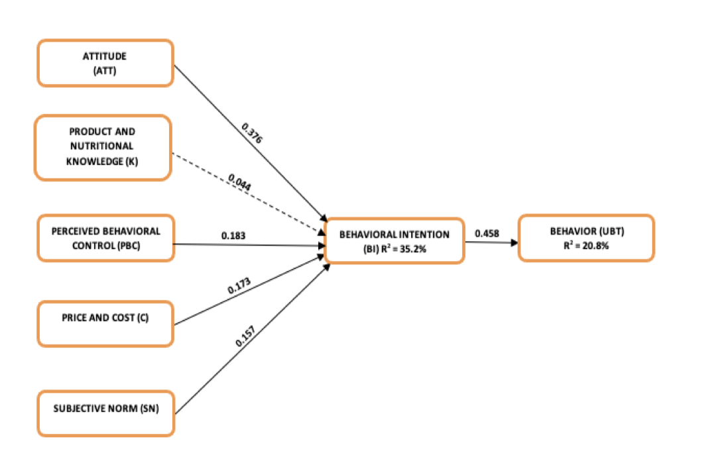
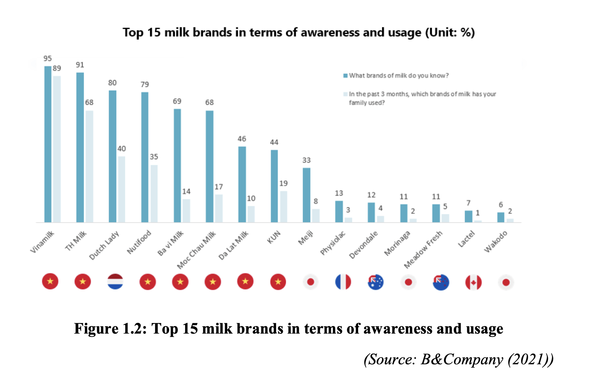
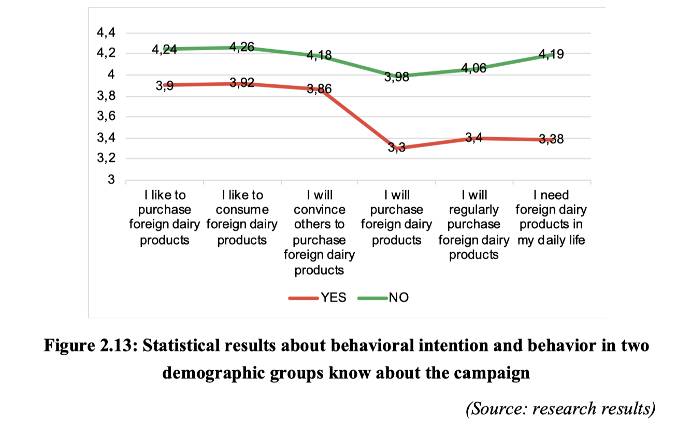
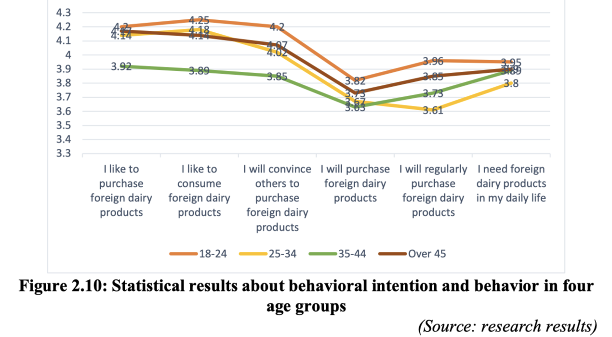

Purchase Intention of Foreign Dairy Products in Hanoi
Quantitative Researcher · National Economics University | 2021 – 2022

Overview
My undergraduate dissertation examined the consumer behavioural factors that drive purchase intention toward foreign dairy products in Hanoi, Vietnam. Using the Theory of Planned Behaviour (TPB) as the theoretical foundation, the study collected 386 valid survey responses across Hanoi and analysed them with multiple linear regression in SPSS 25. The thesis was completed during an internship at the Domestic Market Department, Ministry of Industry and Trade.
What was the challenge?
Foreign dairy brands have steadily captured market share in Vietnam, yet the academic literature offered limited empirical insight into which psychological and contextual factors actually drive Hanoi consumers toward imported dairy over local alternatives. the psychology of foreign product preference, in Vietnamese word “Sính ngoại”, still exists in a part of consumers. Understanding this gap was critical for both government policy and domestic producers seeking to compete effectively.

What I did
- Extended the classic TPB model by integrating Price and Cost and Product and Nutritional Knowledge as additional constructs — reflecting factors specific to the Vietnamese consumer context.
- Designed a 7-construct survey instrument (Attitude, Subjective Norm, Perceived Behavioural Control, Price/Cost, Knowledge, Behavioural Intention, Behaviour) and collected 386 valid responses across Dong Da district, Hanoi.
- Conducted reliability testing (Cronbach's Alpha), Exploratory Factor Analysis (EFA), and two-stage multiple linear regression in SPSS 25 to test 7 hypotheses.
- Built a moderated regression model incorporating the national "Vietnamese People Prioritise Vietnamese Products" campaign as a moderator variable between behavioural intention and actual purchase behaviour.
- Translated findings into practical recommendations for the Ministry of Industry and Trade, domestic dairy producers, and consumer associations.
Key findings
Six of the seven hypotheses were supported. Four factors significantly predicted Behavioural Intention, with standardised coefficients ranked as: Attitude (β = 0.381) > Perceived Behavioural Control (β = 0.272) > Price and Cost (β = 0.258) > Subjective Norm (β = 0.172). Product and Nutritional Knowledge was the only non-significant predictor — suggesting that health information alone is insufficient to shift purchase intent without addressing price sensitivity and peer/social influence. The campaign moderator variable was significant, indicating that awareness of the national "Buy Vietnamese" campaign strengthened the intention–behaviour link.
Outcome
The thesis provided empirical evidence for a Vietnam-specific consumer behaviour model, contributing practical recommendations to government and industry stakeholders. It also demonstrated the value of integrating local contextual factors — price sensitivity and policy campaigns — into established Western behavioural frameworks. The work laid the quantitative research foundation that later informed my co-authored peer-reviewed publication on digital transformation adoption.


Recommendations
Firstly, research should be conducted to develop policies and implement appropriate measures to strengthen linkages in the supply chain of Vietnamese goods, particularly in relation to quality management and food safety.
Secondly, policies should be proposed to strengthen and expand the distribution system, build more civilized and modern distribution channels for local dairy products, diversify distribution formats, and establish a system of retail outlets to sustain sales.
Thirdly, in order to build consumer trust and encourage greater preference for local dairy products, Vietnamese businesses should continue to promote dynamism, creativity, and the courage to think boldly and act decisively. Each enterprise, businessperson, and manufacturer should demonstrate Vietnamese intellectual capability and take the lead in developing the domestic market in association with the campaign “Vietnamese People Prioritise Vietnamese Products.”
Fourthly, enterprises should investigate and survey consumer tastes, preferences, and product demand in the market, while also establishing effective distribution systems to bring goods and services closer to consumers and fulfill their commitments to them.
Finally, attention should be given to products that meet criteria such as attractive design, strong effectiveness, safety, and sustainability for consumers, supported by reliable after-sales services. In addition, Vietnamese dairy enterprises should promote cooperation, linkages, and the use of domestically produced techniques, machinery, equipment, and raw materials.
← Back to Projects